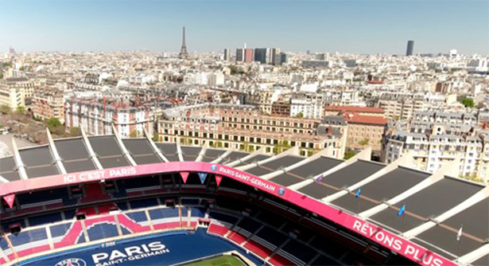
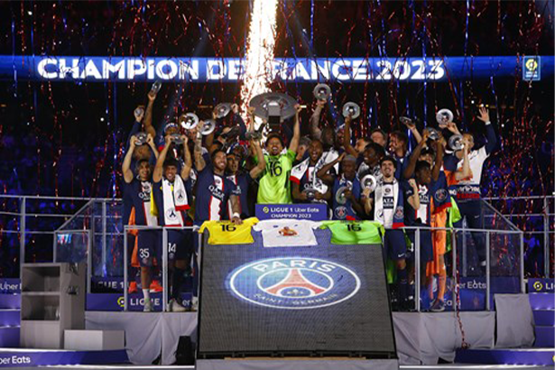

Since 1970, the club has been working its magic in the west of the capital, at the Parc des Princes. In just a few years, Paris Saint-Germain emerged as the reference poi nt of the French sporting landscape. In its first 41 years of existence, the club 'Made in Paris' won no less than 18 trophies, including the 1996 UEFA Cup Winners Cup.
Already a benchmark, the club took another steep upward curve in 2011 under the direction of Qatar Sports Investments. It was the start of a new era, the most success ful in the history of the French game.
The facts are established: since, Paris has since built its status as a global city in all fields. And if elegance and respect are engraved in the DNA of the city, these attribu tes now shine through in its ambassadors, dressed in red and blue. A particularity that now applies in plural in a triptych.
Men's football, women's football, handball and judo: the badge now wants to federate and be the motor of a project size XXL.
In a time of globalisation, Paris Saint-Germain 2.0 wants to cover many disciplines and be transversal too, in order to shine even brighter. It's unique in France: the badge has become a global brand, worn by VIP (Very Important Parisians) such as Beckham, Neymar Jr, Kylian Mbappé, Nadia Nadim and Karabatic. The never before attempt ed gamble has proved successful.
A vector of communication and open by its nature to the international scene, the capital club surfed on the wave in order to capitalise in terms of success. The target wa s set - win - and the trophy room filled up. In only a decade, the men's team reached 30 trophies by May 2023 placing it in "pole position" when it comes to the most do mestic trophies won by a French club.
From 2014 to 2020 the Paris "dream team" eventually scored four quadruples in a row, something without parallel in the 5 major European leagues.
At all levels, the thirst for trophies is palpable. The women's team, winners of the Coupe de France in 2018, got close to fulfilling the continental dream on two occas ions, reaching the Champions League final in 2015 and 2017. On the court and 7 v 7 the assessment is similar: bosses of French handball, the Parisians want to duplicate that dominance in the most prestigious of competitions.
The Paris Saint-Germain "Experts" know like the back of their hand the route to take - and it goes to Cologne, the temple of the discipline where ever year the top club in Europe is determined, and the end of a Final 4 of the EHF Champions League that is always thrilling. Used to the venue, Paris want to definitively add lustre to their domestic crowns.
Yes, Paris is that: great champions on the field encouraged by a passion without limits. It is backed up by numbers and the phenomenon is growing. In the stands the lo ve for the club is felt by the number of season ticket holders at the Parc des Princes, more than 30,000 per season.
Beyond the loyal base, the Paris stadium has been filled to 96% of capacity, making it a reference point. On the web as well, Paris Saint-Germain have got the numbers in with fans stretching to double figures in millions (73 million, cumulated and assessed in June 2019 for example) installing it durably as one of the top 10 global sports clubs! With 89% of the internet users invested in the community coming from abroad (ration assessed on the eve of the 2019-2020 season), Paris has become a major player on the global stage with a truly global reach.
The business and the brand have been valued in the spring of 2017 at a billion dollars, by KPMG and Brand Finance, showing beyond turnover and revenue climbing at great speed, a dynamic that makes it a long-term project.
AN ENGAGED CLUBViscerally attached to in-house knowhow, especially when it comes to the academy, the club integrates its young academy players into the first team, like Mamadou Sakho in the past and Colin Dagba today, as well as stars of tomorrow. An institution engaged in its territory too, conscious and aware of its role in social progress.

Paris, then, is 5 letters full of meaning. A club that is a beacon, responsible and engaged, dedicated to its vocation of transcending emotions. Parisian by birth or by ado ption, French or foreign, from the West or the East, one value is the basis of our identity: passion. It beats 365 days per year when it comes to us.